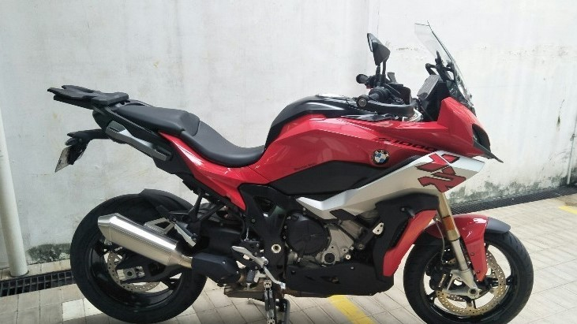

SJ GARAGE
BUY-SELL HIGH QUALITY BIGBIKE
BUY-SELL HIGH QUALITY BIGBIKE

S1000XR was officially launched by BMW Motorrad on Monday (27/4) yesterday. The motorbike, which was first introduced in the 2019 EICMA event, entered the adventurous motorcycle segment. However, the heart of this motorbike is a sport engine derived from the BMW S1000RR. Joe Frans as CEO of BMW Motorrad Indonesia said, the S1000XR would be very suitable for large motorists. Especially for those who often travel long distances or touring. The sport motorized character and the comfort of the touring motorbike make this bike very suitable for long distance driving. "The BMW S1000XR is an adventure motor that uses an inline 4-cylinder engine. The mating between motor sport and adventure," Joe said in a virtual launch session on the BMW Motorrad Indonesia YouTube account (27/4). But there are few obstacles for potential BMW customers who intend to propose a large motor on this one. The reason is even though it was officially launched, the BMW S1000XR cannot be taken home immediately. Consumers have to wait quite a long time until the motorbike unit is sent home. "Hopefully (unit delivery) in August," Joe said when confirmed by OtoRider via WhatsApp message, Monday (27/4). So potential customers have to wait for at least the next four months until finally the motorbike is sent. As additional information, the BMW S1000XR is equipped with a 4-cylinder inline engine, 4-valve per cylinder, and a capacity of 999 cc. With this engine, the maximum power produced is 165 hp at 11,000 rpm and peak torque of 114 Nm at 9,250 rpm. About the price, this motor is priced at Rp. 719 million off the road in Jakarta.
Back to News